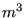
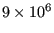
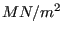

In this section, a cantilever beam loaded by point forces at its free end is analyzed.
The geometry, loading and boundary conditions of the cantilever beam are shown in Figure 1. The size of the beam is 1x1x8 , the loading consists of a point force of  N and the beam is completely fixed (in all directions) on the left end. Let us take 1 m and 1 MN as units of length and force, respectively. Assume that the beam geometry was generated and meshed with CalculiX GraphiX (cgx) resulting in the mesh in Figure 2. For reasons of clarity, only element labels are displayed.
A CalculiX input deck basically consists of a model definition section describing the geometry and boundary conditions of the problem and one or more steps (Figure 3) defining the loads.
The model definition section starts at the beginning of the file and ends at the occurrence of the first *STEP card. All input is preceded by keyword cards, which all start with an asterisk (*), indicating the kind of data which follows. *STEP is such a keyword card. Most keyword cards are either model definition cards (i.e. they can only occur before the first *STEP card) or step cards (i.e. they can only occur between *STEP and *END STEP cards). A few can be both.
In our example (Figure 4), the first keyword card is *HEADING, followed by a short description of the problem. This has no effect on the output and only serves for identification. Then, the coordinates are given as triplets preceded by the *NODE keyword. Notice that data on the same line are separated by commas and must not exceed a record length of 132 columns. A keyword card can be repeated as often as needed. For instance, each node could have been preceded by its own *NODE keyword card.
Next, the topology is defined by use of the keyword card *ELEMENT. Defining the topology means listing for each element its type, which nodes belong to the element and in what order. The element type is a parameter on the keyword card. In the beam case 20-node brick elements with reduced integration have been used, abbreviated as C3D20R. In addition, by adding ELSET=Eall, all elements following the *ELEMENT card are stored in set Eall. This set will be later referred to in the material definition. Now, each element is listed followed by the 20 node numbers defining it. With *NODE and *ELEMENT, the core of the geometry description is finished. Remaining model definition items are geometric boundary conditions and the material description.
The only geometric boundary condition in the beam problem is the fixation at z=0. To this end, the nodes at z=0 are collected and stored in node set FIX defined by the keyword card *NSET. The nodes belonging to the set follow on the lines underneath the keyword card. By means of the card *BOUNDARY, the nodes belonging to set FIX are subsequently fixed in 1, 2 and 3-direction, corresponding to x,y and z. The three *BOUNDARY statements in Figure 4 can actually be grouped yielding:
*BOUNDARY FIX,1 FIX,2 FIX,3
or even shorter:
*BOUNDARY FIX,1,3
meaning that degrees of freedom 1 through 3 are to be fixed (i.e. set to zero).
The next section in the input deck is the material description. This section is special since the cards describing one and the same material must be grouped together, although the section itself can occur anywhere before the first *STEP card. A material section is always started by a *MATERIAL card defining the name of the material by means of the parameter NAME. Depending on the kind of material several keyword cards can follow. Here, the material is linear elastic, characterized by a Young's modulus of 210,000.0  and a Poisson coefficient of 0.3 (steel). These properties are stored beneath the *ELASTIC keyword card, which here concludes the material definition. Next, the material is assigned to the element set Eall by means of the keyword card *SOLID SECTION.
Finally, the last card in the model definition section defines a node set LOAD which will be needed to define the load. The card starting with two asterisks in between the model definition section and the first step section is a comment line. A comment line can be introduced at any place. It is completely ignored by CalculiX and serves for input deck clarity only.
In the present problem, only one step is needed. A step always starts with a *STEP card and concludes with a *END STEP card. The keyword card *STATIC defines the procedure. The *STATIC card indicates that the load is applied in a quasi-static way, i.e. so slow that mass inertia does not play a role. Other procedures are *FREQUENCY, *BUCKLE, *MODAL DYNAMIC, *STEADY STATE DYNAMICS and *DYNAMIC. Next, the concentrated load is applied (keyword *CLOAD) to node set LOAD. The forces act in y-direction and their magnitude is 1, yielding a total load of 9.
Finally, the printing and file storage cards allow for user-directed output generation. The print cards (*NODE PRINT and *EL PRINT) lead to an ASCII file with extension .dat. If they are not selected, no .dat file is generated. The *NODE PRINT and *EL PRINT cards must be followed by the node and element sets for which output is required, respectively. Element information is stored at the integration points.
The *NODE FILE and *EL FILE cards, on the other hand, govern the output written to an ASCII file with extension .frd. The results in this file can be viewed with CalculiX GraphiX (cgx). Quantities selected by the *NODE FILE and *EL FILE cards are always stored for the complete model. Element quantities are extrapolated to the nodes, and all contributions in the same node are averaged. Selection of fields for the *NODE PRINT, *EL PRINT, *NODE FILE and *EL FILE cards is made by character codes: for instance, U are the displacements and S are the (Cauchy) stresses.
The input deck is concluded with an *END STEP card.
The output files for the beam problem consist of file beam.dat and beam.frd. The beam.dat file contains the displacements for set Nall and the stresses in the integration points for set Eall. The file beam.frd contains the displacements and extrapolated stresses in all nodes. It is the input for the visualization program CalculiX GraphiX (cgx). An impression of the capabilities of cgx can be obtained by looking at Figures 5, 6 and 7.
Figure 5 shows the deformation of the beam under the prevailing loads. As expected, the beam bends due to the lateral force at its end. Figure 6 shows the normal stress in axial direction. Due to the bending moment one obtains a nearly linear distribution across the height of the beam. Finally, Figure 7 shows the Von Mises stress in the beam.